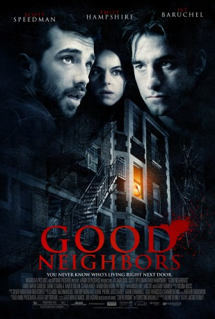

#8216 Good Neighbors
 
 IMDB-Wertung: 5.9 / 10
IMDB-Wertung: 5.9 / 10  Metascore: 0
Metascore: 0 
Takes place in 1995, the year of the second referendum on the separation of Quebec. In the dead of winter, a serial killer is on the loose in the small Montreal neighborhood of Notre Dame de Grace. The tenants of an old apartment house must figure out who they can trust and who they can't.
Jahr: 2010
Dauer: 98 Minuten
FSK: 16
Land: Kanada Studio: Ascot Elite Home EntertainmentTonspuren: DTS - ,
Untertitel: Deutsch,
Auflösung: 1080p (1920x816) Größe: 9000 MB
Genre: Thriller, Drama
Regisseur: Jacob Tierney
Drehbuch: Fenar Ahmad
Soundtrack:
Darsteller:
 Jay Baruchel als Victor
Jay Baruchel als Victor- Anne-Marie Cadieux als Valérie
 Xavier Dolan als Jean-Marc
Xavier Dolan als Jean-Marc Gary Farmer als Roland Brandt
Gary Farmer als Roland Brandt Emily Hampshire als Louise
Emily Hampshire als Louise Kaniehtiio Horn als Johanne
Kaniehtiio Horn als Johanne- Pat Kiely als Bilodeau
- Micheline Lanctôt als Mme Gauthier
 Scott Speedman als Spencer
Scott Speedman als Spencer- Jacob Tierney als Jonah
- Diane D'Aquila als Miss Van Ilen
- Clara Furey als Nathalie
- Nathalie Girard als Nightclub Waitress
- Sean Lu als Mr. Chou
- Kevin Tierney als Jérôme Langlois
Datei: X:\2010(G-M)\Good Neighbors (2010, FSK16, 1920x816).mkv seit 07.02.2018
Festplatte: HD 2010(G-Z)-2011(A-F)
 Es gibt insgesamt 85 Filme in der Gruppe '2010(G-M)'
Es gibt insgesamt 85 Filme in der Gruppe '2010(G-M)'